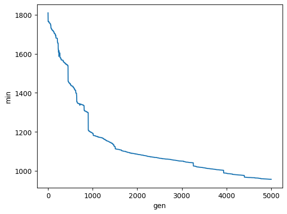

Using GA to Tune The LQR Drone
[1]:
!pip install -q deap
[2]:
from deap import algorithms, base, benchmarks, creator, tools
from deap.benchmarks.tools import diversity, convergence, hypervolume
import array, random, json
[3]:
from notebook_quick_setup import *
Beginning notebook setup...
Added /home/jhewers/Repositories/jdrones/src to path
Imported gymnasium version 0.29.1
pybullet build time: Nov 27 2023 15:36:15
Imported jdrones version 0.7.3.dev80+g6a8b455.d20240322
Imported scipy==1.11.4, numpy==1.26.2, pandas==2.1.3
Imported functools, collections and itertools
Imported tqdm (standard and trange)
Imported seaborn==0.13.0, matplotlib==3.8.2
End of notebook setup
[4]:
def J(obs, u):
x = np.zeros((obs.shape[0], 20))
x[:,[0,1,2,10,11,12,7,8,9,13,14,15]] = u
l1norm = np.linalg.norm(x - obs,axis=0)
return l1norm @ np.array(
[0,0,25, # x y z
0,0,0,0, # Q1 - Q4
1,1,1, # R P Y
25,25,0, # vx vy vz
1,1,1, # P Q R
0,0,0,0 # P1 - P4
]
)
[5]:
def simulate(env, u, progress=False):
dq = collections.deque()
obs, _ = env.reset()
if progress:
it = tqdm(u)
else:
it = u
for ui in it:
if np.any(np.isnan(obs)):
obs[np.isnan(obs)] = np.inf
dq.append(np.copy(obs))
break
dq.append(np.copy(obs))
obs, *_ = env.step(ui)
return States(dq)
[6]:
def get_drone(Q,R, dt):
initial_state = State()
initial_state.pos = (1,1,0.1)
initial_state.rpy = (0,0,0.3)
initial_state.prop_omega = np.ones(4)*6
return gymnasium.make("LQRDroneEnv-v0", Q=Q,R=R, dt=dt, initial_state=initial_state)
[7]:
def individual_to_Q_R(individual):
return np.diag(individual[:12]), np.diag(individual[12:])
[8]:
def cost(individual, dt, u, progress=False):
Q,R = individual_to_Q_R(individual)
# Check if matrix is singular
if any(~np.isfinite(np.linalg.cond(f)) for f in (Q,R)):
return 1e9
try:
env = get_drone(Q,R, dt)
except scipy.linalg.LinAlgError:
return 1e9
obs = simulate(env, u, progress=progress)
return J(obs, u)
[9]:
T = 5
dt = 1/100
_u = State()
_u.vel = [2.5,2.5,0]
_u.rpy = [0,0,0]
u = np.repeat(_u.to_x()[None,:],int(T/dt),axis=0)
CXPB, MUTPB = 0.55, 0.05
[10]:
Q = np.array([1, 1, 1, 50, 50, 10, 100, 100, 10, 1, 1, 1]) * 1e-6
R = np.array([10, 10, 100, 0.001])
benchmark = cost(np.concatenate([Q,R]), dt, u)
benchmark
[10]:
2086.613390465199
GA
[11]:
creator.create("FitnessMin", base.Fitness, weights=(-1,))
creator.create("Individual", list, fitness=creator.FitnessMin)
[12]:
toolbox = base.Toolbox()
[13]:
import multiprocessing
pool = multiprocessing.Pool(28)
toolbox.register("map", pool.map)
[14]:
BOUND_LOW = np.array((1e-6,) * 12 + (1,) * 3 + (0,))
BOUND_HIGH = np.array((1e-4,) * 12 + (100,) * 3 + (1e-3,))
SCALE=np.array((1e-5,)*12+(1,)*4)
NDIM = 16
[15]:
def mutNGaus(indiviudal,scale, N, indpb):
p = indpb * np.ones(len(indiviudal))
inds = np.random.choice(np.arange(0,len(indiviudal)),p=p/p.sum(),size=N)
for i in inds:
indiviudal[i] = np.clip(indiviudal[i] + np.random.normal(scale=scale[i]),0,np.inf)
return indiviudal
[16]:
toolbox.register("attr_float", np.random.uniform, BOUND_LOW, BOUND_HIGH, NDIM)
toolbox.register("individual", tools.initIterate, creator.Individual, toolbox.attr_float)
toolbox.register("population", tools.initRepeat, list, toolbox.individual)
[17]:
toolbox.register("evaluate", cost,dt=dt,u=u)
toolbox.register("mate", tools.cxOnePoint)
toolbox.register("mutate", mutNGaus, scale=SCALE,N=1, indpb=1/NDIM)
toolbox.register("select", tools.selTournament, tournsize=3)
[18]:
def get_pop(n=50):
pop = toolbox.population(n=n)
return pop
[19]:
def get_stats():
stats = tools.Statistics(lambda ind: ind.fitness.values)
stats.register("avg", np.mean)
stats.register("std", np.std)
stats.register("min", np.min)
stats.register("max", np.max)
return stats
[20]:
def get_logbook(stats):
logbook = tools.Logbook()
logbook.header = ["gen", "evals"] + stats.fields
return logbook
[21]:
def get_hof(n=5):
return tools.HallOfFame(n)
[22]:
stats = get_stats()
pop = get_pop()
if 'logbook' not in globals():
logbook = get_logbook(stats)
start_gen = 0
else:
start_gen = max(logbook, key= lambda v: v['gen'])['gen']+1
print(f"Old logbook and population found, starting from {start_gen}")
if 'hof' in globals():
for i,ind in enumerate(hof):
pop[i] = ind
else:
hof = get_hof()
for ind, fit in zip(pop, toolbox.map(toolbox.evaluate, pop)):
ind.fitness.values = (fit,)
fits = [ind.fitness.values[0] for ind in pop]
progress = trange(start_gen,5000+start_gen)
for i in progress:
hof.update(pop)
compiled = stats.compile(pop)
logbook.record(gen=i, evals=len(pop), **compiled)
progress.set_description(f"({i}) Rel. imp. = {benchmark-hof[0].fitness.values[0]:.2f} | Best: {hof[0].fitness.values[0]:.2f} | Avg: {compiled['avg']:.2f} | Std: {compiled['std']:.2f}")
offspring = toolbox.select(pop, len(pop))
offspring = list(toolbox.map(toolbox.clone, offspring))
for child1, child2 in zip(offspring[::2], offspring[1::2]):
if random.random() < CXPB:
toolbox.mate(child1, child2)
del child1.fitness.values
del child2.fitness.values
for mutant in offspring:
if random.random() < MUTPB:
toolbox.mutate(mutant)
del mutant.fitness.values
invalid_ind = [ind for ind in offspring if not ind.fitness.valid]
fitnesses = toolbox.map(toolbox.evaluate, invalid_ind)
for ind, fit in zip(invalid_ind, fitnesses):
ind.fitness.values = (fit,)
pop[:] = offspring
fits = [ind.fitness.values[0] for ind in pop]
[23]:
stats = pd.DataFrame(logbook)
stats.set_index("gen", inplace=True)
[24]:
fig, ax = plt.subplots()
sns.lineplot(data=stats,x='gen',y='min',ax=ax)
plt.show()

[25]:
hof[0]
[25]:
[4.6176861297742446e-08,
8.20079210554526e-09,
0.002015319613213222,
0.0019725098771573558,
0.0019729667280019856,
0.0017448932320868343,
0.00038948848401190175,
6.60213968465527e-08,
0.0013440112213180333,
0.0002558222985053156,
7.213974171712665e-08,
2.2824520808018255e-07,
0.004613030294333662,
0.005277238690122938,
0.003479685903363842,
0.0004249097075205608]
[26]:
df = pd.concat(
[
simulate(
get_drone(*individual_to_Q_R(f), dt),
u,
).to_df(tag=t, dt=dt)
for t, f in [["1st GA", hof[0]], ["Hand Tuned", np.concatenate([Q,R])], ["Random", toolbox.individual()]]
]
).reset_index()
[27]:
fig, ax = plt.subplots(3, figsize=(10, 8))
ax = ax.flatten()
for i, vars in enumerate(
["'x','y','z'","'vx','vy','vz'", "'phi','theta','psi'"]
):
sns.lineplot(
data=df.query(f"variable in ({vars})"),
x="t",
y="value",
hue="variable",
style="tag",
ax=ax[i],
)
ax[i].legend()
fig.tight_layout()
plt.show()